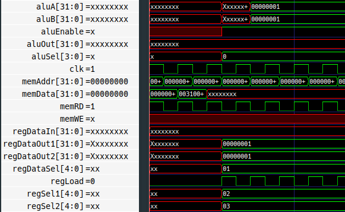

RISC-V Project Update
2019-01-18
In a previous post I made a simple 16-bit processor (Calcu-16) to help me learn Verilog so that I could make a RISC-V based processor. This post is about my progress so far.
I am currently on my second attempt at writing the code for the RISC-V processor. The first time I spent hours coding but I couldn’t get the timing to work. In the end I decided it would be easiest to restart writing the code and I ended up having the same problem again.
Here is a picture of the timing diagram:

The problem is that execution of the instruction starts 3 clock cycles after the instruction is fetched from memory.
Hopefully I will have resolved my issues soon and my next post will be about my finished RISC-V processor with any luck.